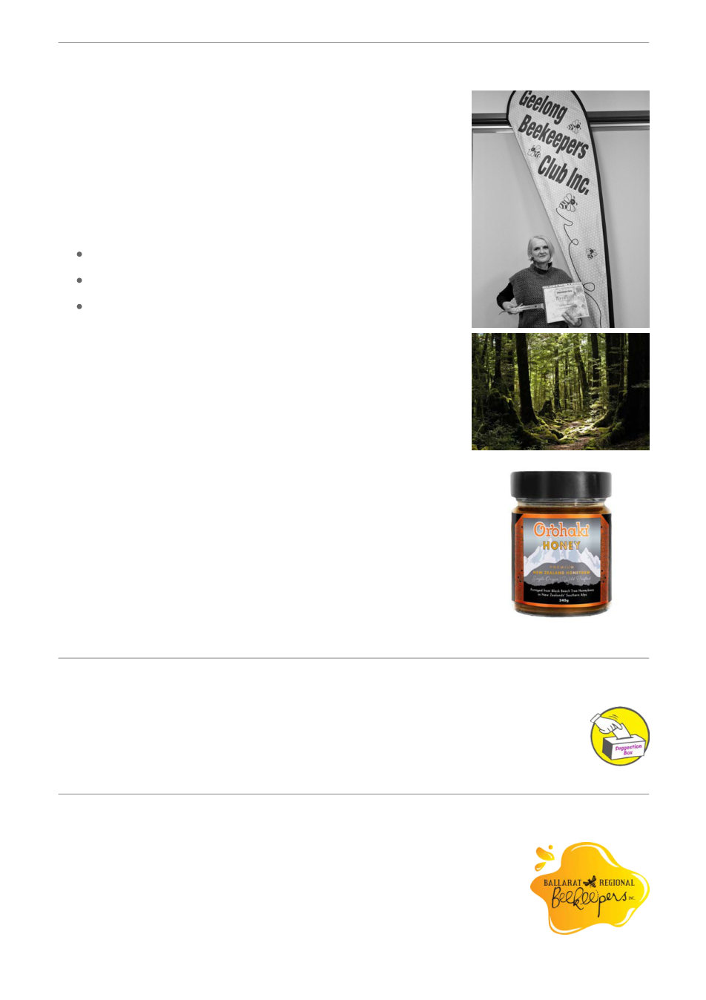

June Guest Speaker
Sarsha Manuel, Black Beech Honey
If you missed this month’s presentation, you missed a genuinely
fascinating deep dive into one of the world’s rarest and most
extraordinary honeys: Black Beech Honeydew, produced only in a
small region of New Zealand’s South Island.
Sarsha walked us through the remarkable three‑way symbiosis that
makes this honey possible:
the black beech forest,
a sooty mould fungus, and
a tiny scale insect (aphid) whose sugary excretions become
the raw material for the bees.
A honey with 10× the mineral content of floral honeys, high
antioxidants, zero crystallisation, and unique prebiotic sugars that
support gut health. Members also heard about easing hay fever and
sinus issues to improving sleep and wound healing.
It’s a process as unexpected and fascinating as the story behind
Kopi‑Luwak and brilliant reminder of how astonishing nature can be
when ecosystems work in perfect harmony.
The presentation also explored the fragile ecology behind
honeydew production, the pressures facing New Zealand
beekeepers, and why this globally top‑five honey remains almost
unknown despite its incredible properties.
It’s a rare look into a rare honey with earthy, complex, flavours and
unlike anything produced from flowers.
Watch the presentation or visit thier website for more
information Black Beech Honey Company
Suggestions?
Articles of interest are always welcome.
If you have an article of interest, a photo or a story that you would like included in the
next newsletter, please email: info@gbkc.au
The Waggle
Have a look at the Ballarat Regional
Beekeepers Newsletter